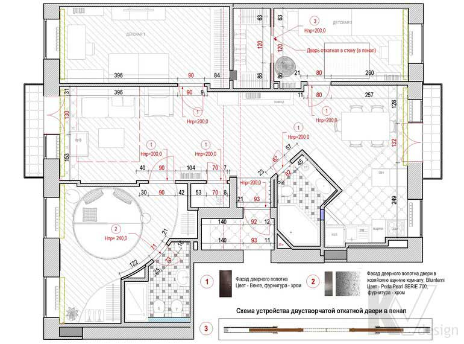

План размещения и открывания дверей

Це креслення включає дані по розташуванню в квартирі або будинку всіх дверних прорізів, із зазначенням розмірів для кожного з них, а також містить уточнення і примітки, які необхідні для оформлення замовлення і подальшої правильної установки дверних блоків. Крім того, на плані даються схеми відкривання дверей і, при необхідності, наводиться їх пристрій - наприклад, для встановлюваних відкатних конструкцій. Тут же вказується рекомендація по моделі двері, кольору фасаду дверного полотна і використовуваної дверної фурнітури.